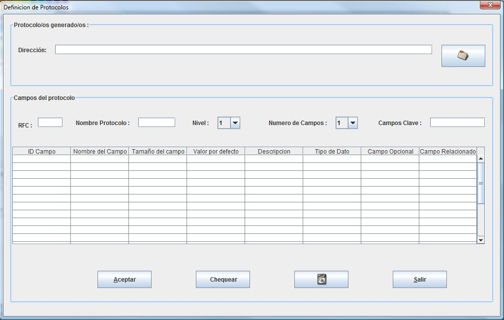

Definicion de un nuevo protocolo
La definición de la estructura de un nuevo protocolo es sencilla e intuitiva únicamente es necesario especificar los valores identificativos como son la RFC a la que hace referencia , nombre , numero de campos , nivel al que pertenece y los campos que serán utilizados como claves de identificación.
Un dato muy importante es la necesaria definición de los campos claves separados mediante el carácter “-”.

Para definir los Campos que conforman el protocolo y tras elegir el numero de los mismos, simplemente seleccionando la tabla principal de la ventan se poda definir los valores de estos.
Para determinar el tamaño de los campos los valores permitidos vienen especificados como numero de bits.
Para la definición de los campos claves existen unas restricciones en cuanto a sus valores y existencia, ya que por tratarse de claves es obligada la presencia de valores del tipo definido.
Estos valores varían si se trata de un valor booleano ya que los permitidos son true, false, verdadero o falso.
Para valores alfanuméricos será correcto cualquier símbolo.
Para valores numéricos los valores dependerá de si se desea un valor único, una lista de valores debiendo ser especificada mediante “,” un ejemplo seria 3, 56,78. Por ultimo se pueden definir rangos de valores siendo un ejemplo 23-78 lo cual indica que los valores validos serán desde el 23 al 78 inclusive.
Copyright © 2010, <Carlos Mardones Muga>
Created with the Freeware Edition of HelpNDoc: Easy to use tool to create HTML Help files and Help web sites